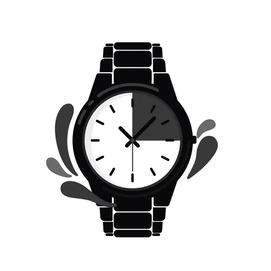
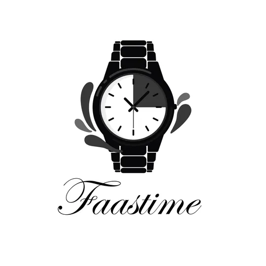
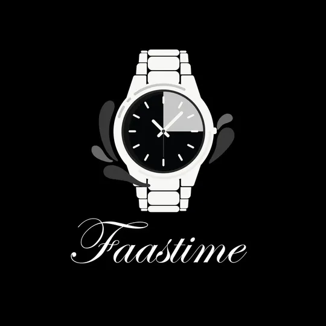
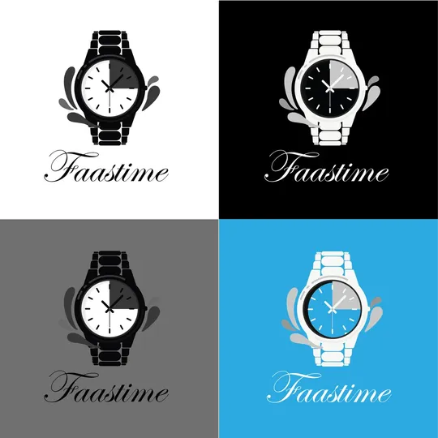

Logo Faastime




Faastime est un logo horloger qui capture l'essence du luxe accessible. Conçu pour une boutique spécialisée dans la vente de montres de qualité, ce logo utilise un visuel immédiatement reconnaissable : une montre-bracelet élégante présentée de face, entourée d'éléments décoratifs organiques qui suggèrent le mouvement et le temps qui passe.
La montre est représentée avec un réalisme stylisé : bracelet à maillons métalliques, cadran rond avec index horaires minimalistes, et aiguilles fines. Le cadran est divisé en deux teintes (noir et gris), créant un effet de lumière et d'ombre qui donne de la profondeur et du volume à l'illustration. Cette dualité chromatique évoque aussi la dualité du temps : jour et nuit, passé et futur, tradition et modernité.
Les formes organiques qui entourent la montre (ressemblant à des gouttes d'eau ou des pétales) ajoutent une dimension poétique et fluide. Elles peuvent être interprétées comme : le temps qui s'écoule (gouttes), l'élégance naturelle (pétales), le mouvement perpétuel (formes dynamiques), l'attention aux détails (décoration soignée).
Le nom "Faastime" est écrit dans une typographie script élégante, probablement inspirée de la calligraphie cursive classique. Les boucles généreuses, les liaisons fluides et l'inclinaison légère vers la droite créent une impression de raffinement et d'intemporalité. Cette police évoque les signatures prestigieuses des maisons horlogères suisses et françaises.
Le contraste entre l'illustration technique et géométrique de la montre et la fluidité organique du lettrage crée un équilibre parfait : précision mécanique rencontre élégance artistique.
Le logo a été décliné sur quatre fonds différents pour s'adapter à tous les contextes : Fond noir : Luxe, mystère, soirée (version la plus premium) ; Fond blanc : Pureté, simplicité, boutique physique ; Fond gris : Neutralité, professionnalisme, catalogues ; Fond bleu ciel : Modernité, fraîcheur, digital/réseaux sociaux.
Cette adaptabilité prouve la solidité du concept : le logo fonctionne partout sans perdre son identité.
Faastime n'est pas juste un jeu de mots (Fast Time = temps rapide), c'est aussi une promesse : des montres de qualité, accessibles rapidement, pour des personnes qui valorisent leur temps. Le nom suggère l'efficacité, la modernité, sans sacrifier l'élégance.
© 2025 by Frenzy Design